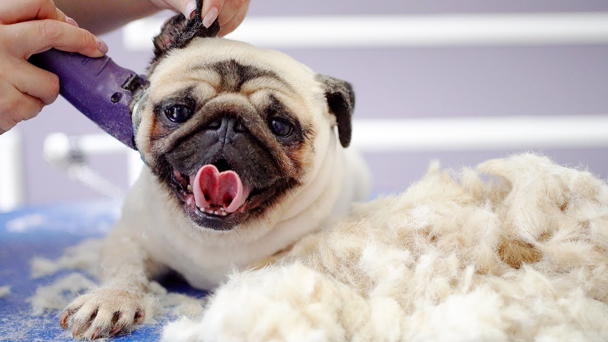

Caring for a pug is relatively straightforward, but there are specific needs that are important to keep in mind. Pugs are prone to breathing issues due to their short snouts, so it's crucial to avoid exposing them to extreme heat. During hot weather, make sure they have a cool place to rest and provide plenty of water. Avoid strenuous exercise as well, since pugs can overheat quickly. A short walk or indoor play session is usually enough to keep them active and happy.
Grooming is another essential part of pug care. Their wrinkled skin requires regular cleaning to prevent infections, especially in the folds of their face. It’s recommended to gently clean between the wrinkles with a damp cloth or baby wipe. Additionally, pugs shed more than many people realize, so regular brushing is helpful to control their shedding and keep their coats healthy. Their nails also need regular trimming since they don't wear down as much naturally.
Finally, a balanced diet is vital for keeping pugs healthy, as they can be prone to obesity. Because they love food, it’s easy for pugs to overeat, so portion control is important. Consult your vet for advice on a proper diet to ensure they receive the right amount of nutrients without overeating. By following these care tips, you can help your pug lead a happy, healthy life filled with love and companionship.
